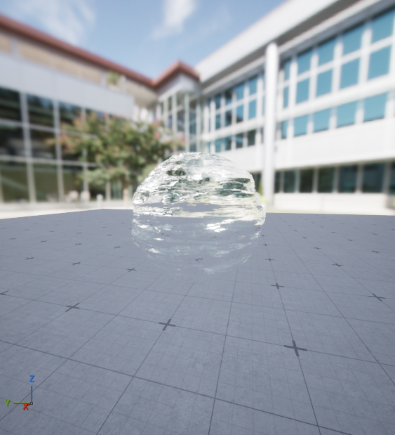

Water Ball.
01 / MATERIAL PREVIEW
材质参数 ↗
02 / MATERIAL LAYERS
单层与叠加
ISOLATED
独立分支 · 诊断视图
ACCUMULATED
累积合成 · 几何起伏 → 完整水球
01 ───────────────────→ 08这里的「层 / pass」是为了讲解而拆出的材质分支；原始 Unreal 材质会将它们编译到材质着色器中，并非八次独立的渲染 pass。
03 / MATERIAL BREAKDOWN
材质节点拆解
04 / UNREAL ENGINE
Unreal 效果
水球整体效果
视频占位 · 16:9

SOURCE
材质来源
M_Water_Inst → M_Water。实例参数与母材质节点从原始 .uasset 中解析，纹理从工程源数据提取。
GLSL 复现材质的计算逻辑。浏览器使用独立的展示场景，Unreal 场景反射、灯光、色调映射与屏幕空间折射存在平台差异；对比时请以原工程截图和录屏为准。